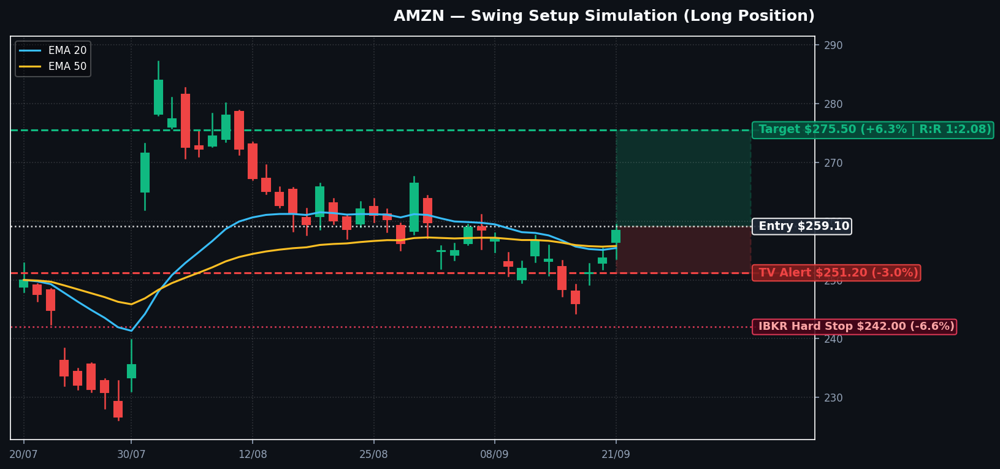

📊 סימולציית גרף מסחר מוגדלת
| סוכן בוועדה | עמדה | ציון | נימוקים מרכזיים שנשקלו |
|---|---|---|---|
| אנליסט טכני | שורי (+2) | זינוק מתמיכת EMA 20/50, מחיר נסחר מעל הממוצעים, RSI 52.7 עולה, תבנית היפוך יומית מוכחת. | |
| אנליסט מומנטום | שורי מובהק (+2) | תזרים אופציות מדהים: יחס P/C של 0.25, מעל 73K חוזי Call ב-$260 לפקיעת השבוע; כסף חכם בהסתערות. | |
| מנהל סיכונים | מאושר (0) | אושר במודל היברידי: התראת TV ב-$251.20 + סטופ אסון ב-IBKR ב-$242.00 (מתחת ל-EMA 200). עבר מבחן מכשול קרוב. |
